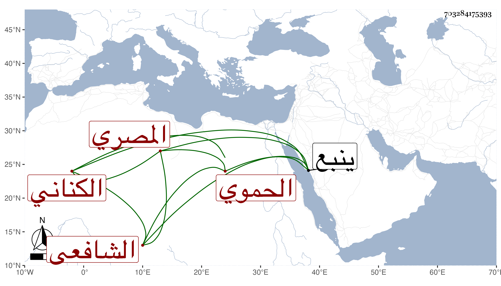

0902Sakhawi.DawLamic.ITO20230111-ara1.EIS1600.703284175393
Biography ID: 703284175393
417
محمد بن أبي بكر بن عبد العزيز بن محمد بن إبراهيم بن سعد الله بن جماعة بن حازم بن صخر بن عبد الله العز أبو عبد الله بن الشرف بن العز بن البدر الكناني الحموي الأصل المصري الشافعي الآتي أبوه ويعرف كسلفه بابن جماعة . ولد سنة تسع وأربعين وسبعمائة بينبع وأحضر على الصدر الميدومي ثم سمع من جده العز الكثير ومن ذلك تساعياته الأربعين من العرضى والبياني وأبي الفرج بن القاري وناصر الدين الحراوي والقلانسي ومما سمعه عليه الأول من مسند أنس للحنيني وبعض المعجم الصغير للطبراني ، وأجاز له خلق من الشاميين والمصريين بعناية الزين العراقي منهم الشهاب أحمد المرداوي وخلق من أصحاب الفخر وغيره ، واشتغل صغيرا ومال لفنون المعقول فأتقنها إتقانا بالغا ولما قدم العلاء السيرامي وولي البرقوقية لازمه حتى مات وكذا أخذ عن البلقيني في الحاوي وغيره وعن العلاء علي بن عبد الواحد بن صغير في الطب وغيره في آخرين كالعز الرازي شيخ الشيخونية فيما بلغني ولا أستبعد أن يكون أكمل الدين منهم ، ورأيت بخطه أن من شيوخه المحب ناظر الجيش والشمس بن الصائغ الحنفي بل قال والبرهان التنوخي ، وقال المقريزي أنه أخذ عن ابن خلدون فأكثر وكان يتبجح بذكر ذلك في دروسه وأنه مع ذلك لم ير ابن خلدون يجل أحدا كإجلاله إياه وأنه ترافق هو وإياه في الأخذ عن ابن صغير كان العز يقرأ عليه شرح الفصول لابن أبي صادق ومضى في ترجمة أصيل بن الخضري محمد بن إبراهيم بن علي أنه قرأ على محمد بن عادل بن محمود التبريزي شيرين كتب ابن عربي في حكاية الله أعلم بصحتها ، ونظر في كل فن حتى في الأشياء الصناعية كلعب الرمح ورمي النشاب وضرب السيف والنفط حتى الشعوذة حتى في علم الحرف والرمل والنجوم ومهر في الزيج وفنون الطب وكان من العلوم بحيث يقضي له في كل فن بالجميع وصار المشار إلبه في الديار المصرية في العقليات والمفاخر به لعلماء العجم تخضع له الرجال وتسلم له المقاليد بل هو في ذلك أمة وحده وفضلاء البلد كلهم عيال فيه ، وكان يقول أعرف خمسة عشر علما لا يعرف علماء عصري أسماءها ، وصنف التصانيف الكثيرة المنتشرة التي جمع هو أسماءها في جزء مفرد يقضي الواقف عليه العجب من كثرتها ولكن ضاع أكثرها بأيدي الطلبة والموجود منها النصف الأول من حاشية العضد وشرح جمع الجوامع وله على كل كتاب أقرأه مع أنه كاد أن يقرئ جميع المختصرات التصنيف والتصنيفان ما بين حاشية ونكت وشرح حتى أنه كتب على كل من علوم الحديث لابن الصلاح ومختصر جده البدر له شرحا وعلى أربعي النووي وقصيد ابن فرج ثم لخص تخريج الرافعي لابن الملقن على ما ظهر له ومات عقبه ولكنه لم يرزق ملكة في الإختصار ولا سعادة في حسن التصنيف ، وكذا كان ينظم شعرا عجيبا غالبه غير موزون ولذا كان يخفيه كثيرا إلا عن من يختص به ممن لا يدري الوزن ، وهو ممن قرض سيرة المؤيد لابن ناهض بلى كان أعجوبة دهره في حسن التقرير بحيث كان بين لسانه وقلمه كما بينه هو وآحاد طلبته ، وأقرأ التنبيه والوسيط وشرح الألفية لابن المصنف وكتب عليه تصنيفا والتسهيل والكشاف والمطول وكتب عليه شرحا سماه المعول والمختصر وكتب عليه شيئا سماه سبك النضير في حواشي الشرح الصغير كل هذا مع الإنجماع عن بني الدنيا وترك التعرض للمناصب ومهابته في النفوس . وقد نفق له سوق في الدولة المؤيدية وكارمه السلطان عدة مرار بجملة من الذهب ومع ذلك فكان يمتنع من الاجتماع به ويفر إذا عرض عليه ذلك وحضر المجلس المعقود للهروي فلم يتكلم في جميع النهار كله مع التفاتهم إليه واستدعائهم للكلام منه بل سأله السلطان يومئذ عن تصنيفه في لعب الرمح فجحد أن يكون صنف فيه شيئا ، وكان يبر أصحابه ويساويهم في الجلوس ويبالغ في إكرامهم ويديم الطهارة فلا يحدث إلا توضأ ولا يترك أحدا يستغيب عنده أحدا هذا مع ما هو فيه من محبة الفكاهة والمزاح واستحسان النادرة وكونه لا يتحاشى عن مواضع النزه والمفترجات ويمشي بين العوام ويقف على حلق المثاقفين ونحوهم وربما يركب الحمار إذا ابعد ويقتصد في ملبسه ، ولم يتفق له الحج مع حرص أصحابه له عليه ولا تزوج بلى كانت عنده زوجة أبيه فكانت تقوم بأم بيته وهو يبرها ويحسن إليها وكان يعاب بالتزيني بزي العجم من طول الشارب وعدم السواك حتى سقطت أسنانه . ذكره شيخنا في انبائه ومعجمه بحاصل ما تقدم ، وقال في الأنباء : لازمته من سنة تسعين إلى أن مات وكان يودني كثيرا ويشهد لي في غيبتي بالتقدم ويتأدب معي إلى الغاية مع مبالغتي في تعظيمه حتى كنت لا أسميه في غيبته إلا إمام الأئمة ، وكذا قال في المعجم : أخذت عنه شرح منهاج الأصول وفي جمع الجوامع وفي مختصر ابن الحاجب وفي المطول وقرأت عليه يعني أشياء منها الخامس من مسند السراج ووصفه بالإمام العلامة الفهامة الفريد الأصيل ، وأجاز لي غير مرة ولأولادي . مات في العشرين من ربيع الآخر سنة تسع عشرة بعد انقضاء الطاعون وكان هو في غاية الاحتراز منه بحيث أنه لم يدخل في تلك الأيام الحمام وامتنع من مأكولات ومشروبات عينها لأصحابه فلما ارتفع وظن السلامة منه دخل الحمام وتصرف فيما كان احتمى منه فأصيب واشتد أسف الناس عليه ولم يخلف بعده مثله ، وممن ترجمه ابن قاضي شهبة والمقريزي في عقوده وأنه كان في آخر عمره على خير من النسك وقيام الليل وحفظ اللسان والإعراض عن الدناسات التي طلب لها فزهد فيها ولم أزل أعرفه فان أباه كان يسكن بجوارنا ، قال وقد تخرج به في الأصول والمنطق والمعاني والبيان والحكمة خلائق من المصريين والغرباء وطار اسمه وانتشر ذكره في الأقطار وقصده الناس من الشرق والغرب ولم يخلف في فنونه بعده مثله والعيني بل عمل لنفسه جزءا اسماه ضوء الشمس في أحوال النفس وأخذنا عن خلق ممن أخذ دراية ورواية كابن الهمام وابني الأقصرائي والزين رضوان والأبي والسفطي وشعبان ومن قبلهم التقي الفاسي وابن موسى المراكشي ومن لايحصى كثرة كالبرهان بن حجاج الأبناسي والتلواني ، وأول تحديثه سنة بضع وتسعين رحمه الله وإيانا .
